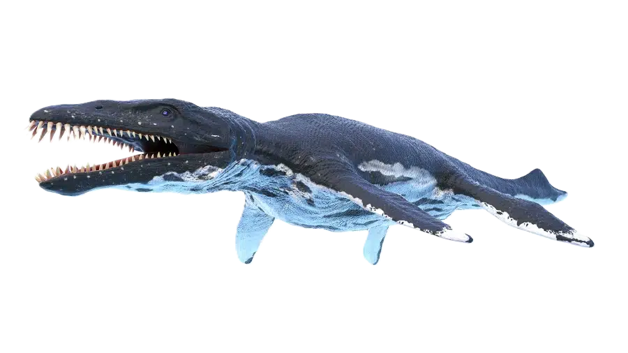

Liopleurodon
Dientes de lados lisos
Plesiosauroidea/Pilosauridae
Reptil marino carnívoro ubicado en Europa, Asia, Norteamérica y África
Sus restos se catalogaron en 1873 y vivió hace 160 millones de años. Un tipo de plesiosaurios de cuello corto. Fue presentado en el programa de televisión "Paseando con dinosaurios", de la BBC, como un enorme animal de 25 metros de largo. Sin embargo, esto no se considera acertado para ninguna de las especies de Liopleurodon
Altura: 2,5m
longitud: 7m
Peso: 2500
velocidad: 10km/h
periodo: Jurásico medio
Especímenes: 4
